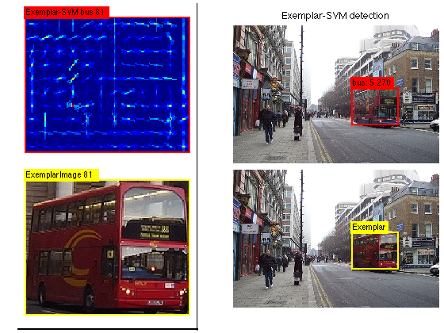
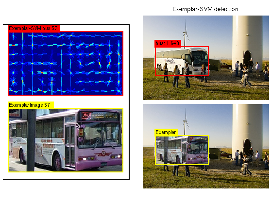
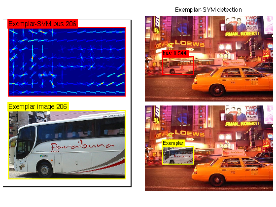
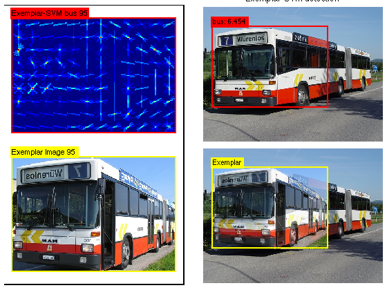
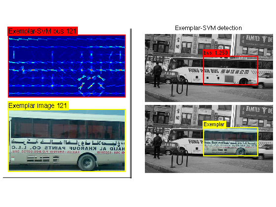
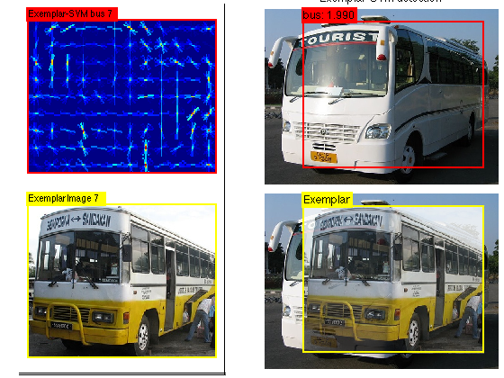
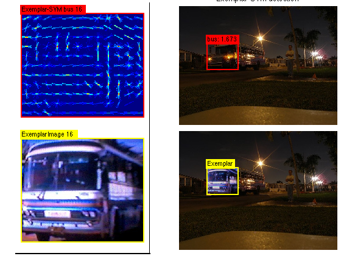
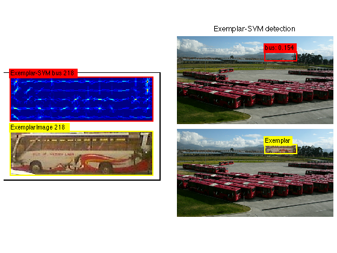
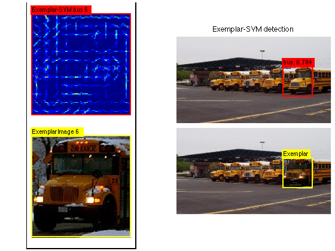
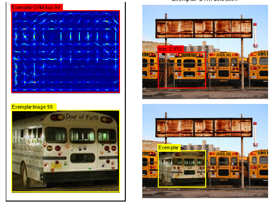

Contents
addpath(genpath(pwd));
cls = 'voc2007-bus';
Download and load pre-trained VOC2007 bus models
[models, M, test_set] = esvm_download_models(cls);
local_dir = '/Users/tomasz/projects/pascal/VOCdevkit/';
if isdir(local_dir)
[models] = esvm_update_voc_models(models, local_dir);
end
Found voc2007-bus.mat, not downloading
Load one image, and apply bus detector
I1 = imread('000858.jpg');
esvm_demo_apply_exemplars(I1, models, M);
--image 00001/00001: 229 exemplars took 3.585sec, #windows=00124, max=-0.475
Applying M-matrix to 1 images:.took 0.007sec
Applying NMS (OS thresh=0.300)
Propagating scores onto raw detections
Showing top detection 1

Create an array of images, and apply bus detector
I2 = imread('009021.jpg');
I3 = imread('009704.jpg');
Iarray = {I2, I3};
esvm_demo_apply_exemplars(Iarray, models, M);
--image 00001/00001: 229 exemplars took 4.059sec, #windows=00145, max=-0.679
Applying M-matrix to 1 images:.took 0.008sec
Applying NMS (OS thresh=0.300)
Propagating scores onto raw detections
Showing top detection 1

--image 00001/00001: 229 exemplars took 3.594sec, #windows=00071, max=-0.747
Applying M-matrix to 1 images:.took 0.003sec
Applying NMS (OS thresh=0.300)
Propagating scores onto raw detections
Showing top detection 1

Create URL-based set of images, and apply bus detector
cat(1,test_set{1:5})
esvm_demo_apply_exemplars(test_set(1:5), models, M);
ans =
http://people.csail.mit.edu/~tomasz/VOCdevkit/VOC2007/JPEGImages/000014.jpg
http://people.csail.mit.edu/~tomasz/VOCdevkit/VOC2007/JPEGImages/000054.jpg
http://people.csail.mit.edu/~tomasz/VOCdevkit/VOC2007/JPEGImages/000188.jpg
http://people.csail.mit.edu/~tomasz/VOCdevkit/VOC2007/JPEGImages/000195.jpg
http://people.csail.mit.edu/~tomasz/VOCdevkit/VOC2007/JPEGImages/000231.jpg
Warning: loading image from URL
--image 00001/00001: 229 exemplars took 3.593sec, #windows=00080, max=-0.823
Applying M-matrix to 1 images:.took 0.004sec
Applying NMS (OS thresh=0.300)
Propagating scores onto raw detections
Showing top detection 1
Warning: loading image from URL

Warning: loading image from URL
--image 00001/00001: 229 exemplars took 4.022sec, #windows=00144, max=-0.542
Applying M-matrix to 1 images:.took 0.007sec
Applying NMS (OS thresh=0.300)
Propagating scores onto raw detections
Showing top detection 1
Warning: loading image from URL

Warning: loading image from URL
--image 00001/00001: 229 exemplars took 2.827sec, #windows=00082, max=-0.558
Applying M-matrix to 1 images:.took 0.004sec
Applying NMS (OS thresh=0.300)
Propagating scores onto raw detections
Showing top detection 1
Warning: loading image from URL

Warning: loading image from URL
--image 00001/00001: 229 exemplars took 3.978sec, #windows=00087, max=-0.793
Applying M-matrix to 1 images:.took 0.004sec
Applying NMS (OS thresh=0.300)
Propagating scores onto raw detections
Showing top detection 1
Warning: loading image from URL

Warning: loading image from URL
--image 00001/00001: 229 exemplars took 4.018sec, #windows=00098, max=-0.749
Applying M-matrix to 1 images:.took 0.005sec
Applying NMS (OS thresh=0.300)
Propagating scores onto raw detections
Showing top detection 1
Warning: loading image from URL

Set image path directory, and apply bus detector
Idirectory = '/v2/SUN/Images/b/bus_depot/outdoor/';
if isdir(Idirectory)
Ilist = get_file_list(Idirectory);
Ilist = Ilist(1:min(5,length(Ilist)));
MAXDIM = 500;
Ilist = cellfun2(@(x)(@()imresize_max(convert_to_I(x),MAXDIM)), ...
Ilist);
esvm_demo_apply_exemplars(Ilist, models, M);
else
fprintf(1,'Note: not applying because %s is not a directory\n',...
Idirectory);
end
--image 00001/00001: 229 exemplars took 3.065sec, #windows=00029, max=-0.876
Applying M-matrix to 1 images:.took 0.002sec
Applying NMS (OS thresh=0.300)
Propagating scores onto raw detections
Showing top detection 1

--image 00001/00001: 229 exemplars took 3.253sec, #windows=00124, max=-0.768
Applying M-matrix to 1 images:.took 0.006sec
Applying NMS (OS thresh=0.300)
Propagating scores onto raw detections
Showing top detection 1

--image 00001/00001: 229 exemplars took 2.995sec, #windows=00082, max=-0.702
Applying M-matrix to 1 images:.took 0.004sec
Applying NMS (OS thresh=0.300)
Propagating scores onto raw detections
Showing top detection 1

--image 00001/00001: 229 exemplars took 3.600sec, #windows=00122, max=-0.667
Applying M-matrix to 1 images:.took 0.006sec
Applying NMS (OS thresh=0.300)
Propagating scores onto raw detections
Showing top detection 1

--image 00001/00001: 229 exemplars took 4.035sec, #windows=00281, max=-0.741
Applying M-matrix to 1 images:.took 0.016sec
Applying NMS (OS thresh=0.300)
Propagating scores onto raw detections
Showing top detection 1
